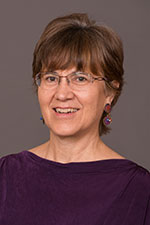

M.A. | PhD
Second Language Education
Study language use, teaching, learning, and policy as it impacts language minority and language majority learners in ESL/EFL, language revitalization, world language education and bilingual and immersion education programs.
Priority deadline: December 1

Choose your focus
M.A. specializations
Choose one from the following two:
Teaching English to Speakers of Other Languages
Focus on the field of applied linguistics uniting research, teaching and service in addressing the second language learning needs of adult learners in the university and the wider community, both in the U.S. and abroad. Read more about the MA in TESOL.
Choose a Curriculum plan. More information in the graduate catalog under the "TESOL" subplan.
Second Language Education
Focus broadly on second language education, including English as a second language (ESL) for K-12, postsecondary, and adult classrooms; bilingual and immersion education; and traditional foreign language education in both K-12 and postsecondary settings.
Choose a Curriculum plan. More information in the graduate catalog
Choose your focus
PhD focus areas
Second language acquisition + classroom discourse
Examine language learning processes and how language is used in or out of school.
Languages + cultures across schools and communities
Examine how ethnicity, identity, ideology, power, language use, and the dynamics of cross-cultural communication intersect with language learning, academic achievement and the home-school connection.
Language policy
Analyze the formation, implementation, and negotiation of language policy in national, school, community, and private spheres.
Second language pedagogy + teacher development
Examine effective teacher preparation and professional development for language teachers or content teachers in immersion settings.
You will plan your PhD curriculum based upon your research interests with your faculty adviser. The following general curriculum is taken by all PhD students to prepare them for their dissertation.
Faculty

Professor
Martha Bigelow
Second language acquisition | Schooling experiences of adolescent immigrant youth | Preservice teacher education | Multicultural education. Full profile

Associate Professor
Mary (Fong) Hermes
Indigenous language revitalization | Multimedia technology and language learning. Full profile
Professor
Kendall King
Second language learning | Bilingualism | Transmigratory experiences of children | Immigrant education | Language ideology | Language policy. Full profile

Senior Lecturer
Susan Ranney
Preservice teacher education | Language through content | Academic language instruction | Functional grammar. Full profile
Professor
Elaine Tarone
Second language acquisition | Applied linguistics | Interlanguage | Alphabetic literacy and second-language oracy. Full profile Elaine is the faculty adviser for students in the Teaching English to speakers of other languages in higher education M.A. track.

Professor
Diane (Dee) Tedick
Dual language + immersion education | Content-based language instruction | Language teacher education and development | World language education. Full profile
Opportunities
Funding
Support is available in the form of:
- Teaching Assistantships. Students often work as student teaching supervisors or as instructors in the undergraduate TESL minor, the Minnesota English Language Program, the College of Liberal Arts Writing Center, and other programs on campus. Daytime availability, a teaching license, and teaching experience are required
- Research Assistantships
- Fellowships. Based on a departmental nomination process. You will be notified by the Director of Graduate Studies if you are being considered for a fellowship
A typical full benefits assistantship (tuition, health insurance + stipend) entails 20 hours/week at approximately $18/hour. Benefits are pro-rated based on the appointment percentage.
Have a complete application in by December 1 to be considered for these positions for the following academic year.
While support is not guaranteed, we make every attempt to financially support full-time students typically for 4 years. You may also explore assistantships available outside our department on the University's employment page.
Credit for past work
Transfer credits
M.A. students must complete at least 60% of coursework (not including thesis credits) within our program. PhD students may transfer no more than 15 credits from an outside institution.
A maximum of 12 graduate course credits taken as non-degree seeking or non-admitted status at the University of Minnesota can be transferred--this is counted separately from the maximum 60%, or 15 outside institution credits.
For example, a PhD student could transfer a maximum of 27 credits (15 outside + 12 non-degree from UMN).
If you earned a M.A. at the UMN, please contact the Graduate Studies Coordinator to discuss transfer procedures.
Thesis credits cannot be transferred.
After you are admitted, you will work with your adviser to determine which credits may transfer.
Where our grads go from here
Placements
- Boston University
- Hamline University
- Minnesota State Universities
- Monterey Institute of International Studies
- New York University
- Osaka University Japan
- University of Wisconsin-Eau Claire
- University of Iowa
- Warsaw University
- Hamline University
- Lesin American School in Switzerland
- St. Catherine University
- University of Minnesota:
- Center for Advanced Research on Language Acquisition
- College of Education and Human Development International Initiatives
- Office of Teacher Education
- Minnesota English Language Program
- National Center for Education Outcomes
Faculty positions:
Administrative/Research Positions:
Graduate Studies Coordinator
Kristina Pearson
cigs@umn.edu
Fax: (612) 624.8277
125H Peik Hall
Office hours 8:00 - 3:30